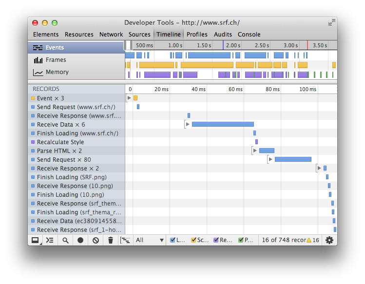
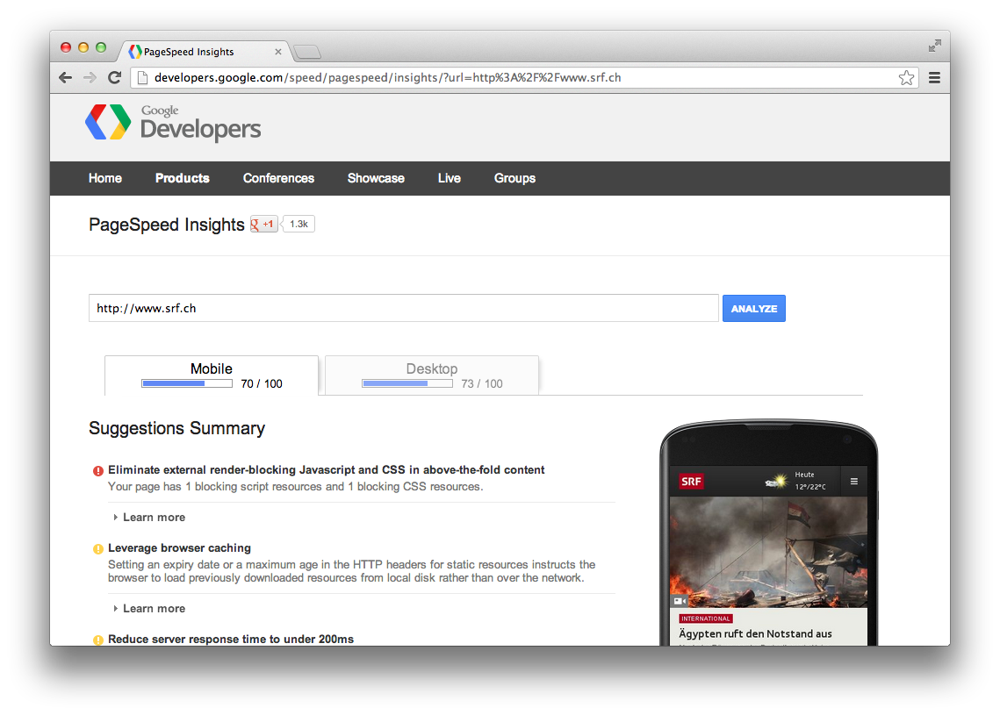
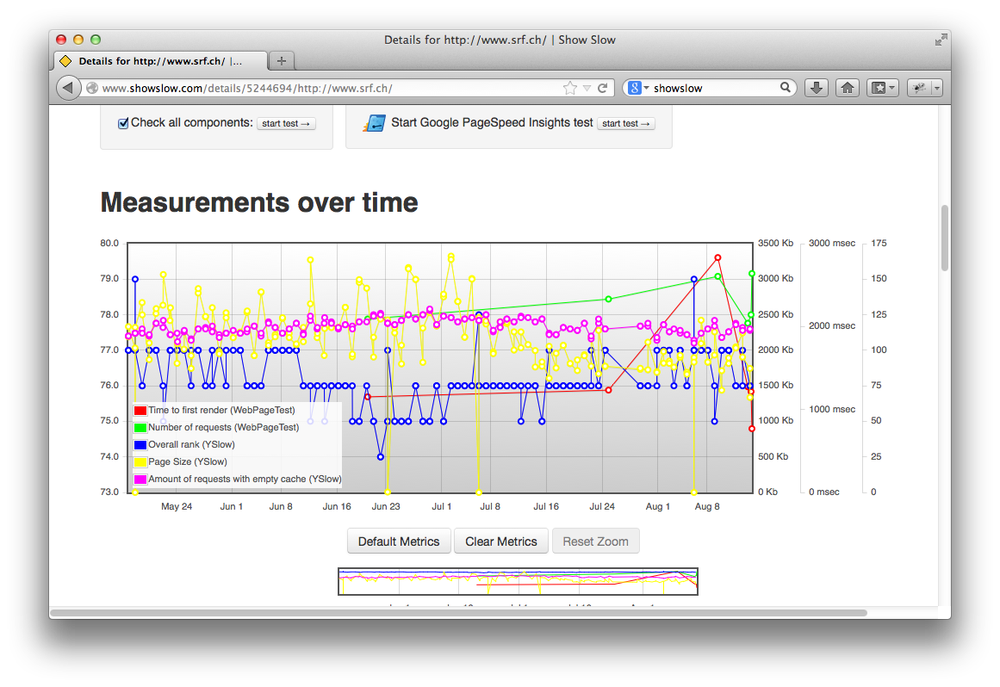

Frontend Performance
Where it matters
Frontend Conference 2013
Urban Etter
About me
Urban Legends
Urban Myths
Urban Etter
Schweizer Radio und Fernsehen
Architect
Part of the Frontend Team
@urbmc
Performance is a
HUGE
topic
Cache invalidation
Vertical scaling
Database clusters
This talk is not about that
Advices for creating
single-page web apps
['hello', 'world'].join(' ')
instead of
'hello' + ' ' + 'world'
This talk is not about that either
Good practice
Some traps
Some code
Frontend performance for the
craftsman
#1 Performance matters
#2 Loading process
#3 Don't block the browser
#4 Deferred loading of JS
#5 Browser cache
#6 Tools
#7 DOM manipulation
#8 Recap
#1 Performance matters
... that slowing down the search results page by 100 to 400 milliseconds has a measurable impact on the number of searches per user of -0.2% to -0.6%
by Google
To get that sensation, your requests need to take less than 100ms.
by 37 signals
Performance is a
feature
It takes effort to get it right
It conflicts with other features
Reduced complexity
Maintainability
Security
Complex
Involves every discipline in web development
#2 Loading process
Key to frontend performance
is to understand the page loading process

A lot faster
A lot more files


timing point #1: fetch the initial HTML
timing point #2: reach DOM ready
timing point #3: reach "loaded" event

Not all images load in parallel
Restriction is
part of the HTTP standard
2 parallel connections per host
for older browsers
Modern browsers
6 parallel connections per host
#3 Don't block the browser
<head>
<link rel="stylesheet" href="style.css">
<script src="script.js"> </script>
</head>
<body>
My fancy content
</body>
JS loading and parsing
blocks
the rendering process
Solution 1
Use the async attribute
<head>
<link rel="stylesheet" href="style.css">
<script src="script.js" async></script>
</head>
<body>
My fancy content
</body>
async == not blocking
Solution 2
Preferred
Put JS at the end of the body tag
<head>
<link rel="stylesheet" href="style.css">
</head>
<body>
My fancy content
<script src="script.js"></script>
</body>
#4 Deferred loading of Javascript
Not all JS is needed in all situations

Load calendar JS when
clicking
on the calendar

Load calendar JS when
hovering
over the calendar
Problem: delay on hovering
Load calendar JS when all other code is loaded
Result: Added
Complexity
Performance is a
feature
NOT WORTH IT
unless you are creating a
single-page application
Been there, done that
Deferred != Bad
Deferred image loading
FTW

Lazy load jQuery plugin
<img src="img/placeholder.png"
data-original-src="img/real_image.jpg">
#5 Browser cache
The good and the bad parts
All JS in one file
Tell the browser to cache it
Browser only has to download it once
Free
for the rest of the stay
Better have
one big
request
than have
a lot of small
requests
CSS sprites
.sprite-musikwelle {background-position: 0 0; width: 46px; height: 22px;}
.sprite-srf1 {background-position: -66px 0; width: 46px; height: 22px;}
.sprite-srf2 {background-position: -132px 0; width: 46px; height: 22px;}
.sprite-srf3 {background-position: -198px 0; width: 46px; height: 22px;}
.sprite-srf4 {background-position: -264px 0; width: 46px; height: 22px;}
.sprite-virus {background-position: -330px 0; width: 46px; height: 22px;}
Performance is a
feature
Complexity
vs
Performance
The bad parts
You change your CSS
Browser cached CSS
<script src="script.js"></script>
<script src="script.js?v=12"></script>
<head>
<link rel="stylesheet" href="style.css">
</head>
<body>
My fancy content
{render_include('global')}
</body>
[global]
javascript[]=jquery.js
javascript[]=jquery.cookie.js
...
function render_include(groupName) {
files = getFilesByGroup(groupName);
if (files.newest > lastRun.timestamp) {
result = pack(concatenate(files));
filename = md5(files.newest);
save_file(filename, result);
} else {
filename = lastRun.filename; }
return '<script src="filename">'; }
#6 Tools
YSlow
Chrome Developer Tools
Google PageSpeed Insights
Web page test

Regression test
Show slow
#7 DOM manipulation
DOM
internal HTML representation
accessible by JS
$('#msg').addClass('very_important');
Look up the element with id "msg" in the internal structure
Modify the internal structure
Rerender (at least parts) of the page
Save DOM manipulations
Real world example

Filtering

Column markup in 2 <ul>s

HTML - Selects
<select id="topic">
<option value="topic:news">
News
</option>
<option value="topic:twitter-relevant">
Twitter relevant
</option>
</select>
HTML - Letters
<div class="letter" data-letter="t">
<ul>
<li data-attr="topic:news,station:srf1">
Tagesschau</li>
</ul><ul>
<li data-attr="topic:twitter-relevant">
Tatort</li>
</ul>
</div>
First aproach
var topic = $('#topic-filter').val();
var station = $('#station-filter').val();
var selector =
'[data-attr*="' + topic + '"]'
+ '[data-attr*="' + station + '"]';
$('li').show(); // reset
$('li:not(' + selector + ')').hide();
Result

Second approach
Hide all shows
Iterate through letters
Clone matching shows
Append cloned shows to left or right list
Show cloned shows
Iterating and cloning
$('div.letter').each(function(){
$('li.show')
.hide()
.find(selector)
.clone()
.addClass('copied')
.appendTo('body');
... });
Iterating and cloning
...
$('li.copied).each(function(){
// append to left or right ul
$(this).show();
});
...
This was
slow
Third approach
Iterating
$repository = $('li.show').hide();
$('div.letter').each(function(){
$repository
.find(selector)
.clone()
.each(function(){
// append to left or right ul
})
.show(); });